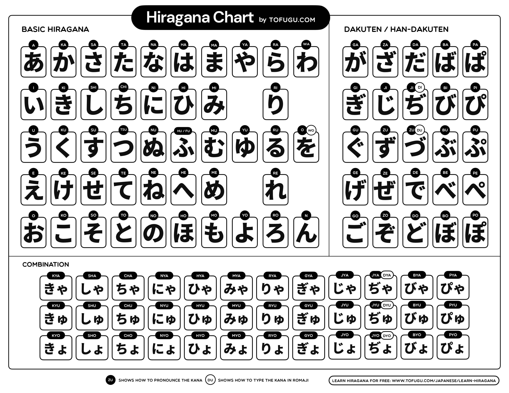
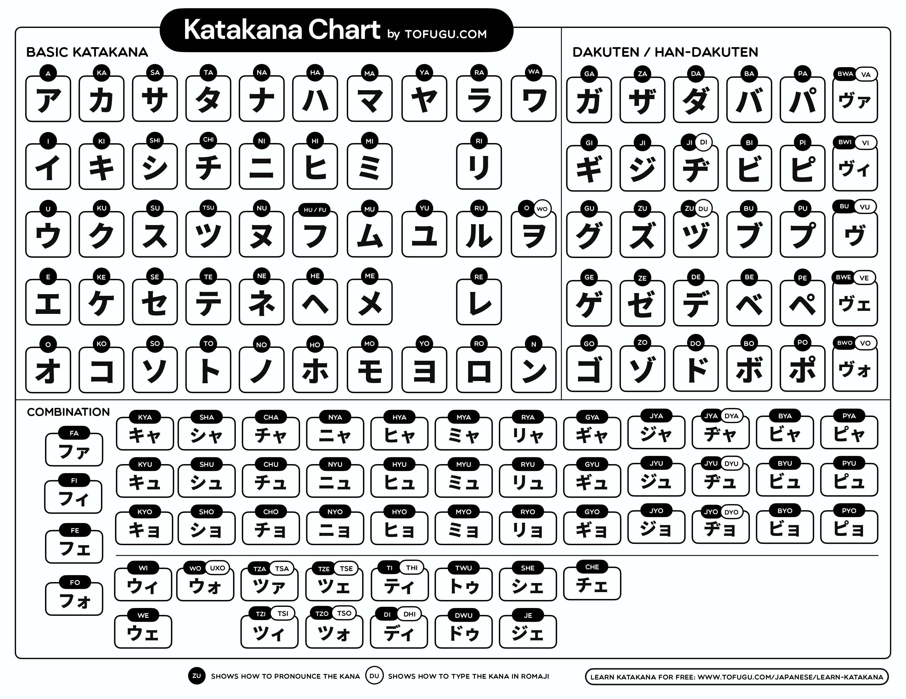

Ajuda e Referência
www.ovelhaeletrica.com/blog/contato.Este site é um Flashcard interativo para estudar os sistemas de escrita japoneses: Hiragana, Katakana, Kanji N5/N4 e Suuji (números). Use os controles abaixo para navegar pelos caracteres e praticar a leitura.
Controles e Atalhos
| Tecla | Ação | Descrição |
|---|---|---|
| Space | Falar | Revela a leitura e toca o áudio do caractere |
| P | Iniciar · Pausar | Inicia ou pausa o avanço automático |
| → / > / . | Próximo | Ir para o próximo caractere |
| ← / < / , | Anterior | Voltar ao caractere anterior |
| Esc | Tela cheia | Abre ou fecha o modo de tela cheia |
Como usar
Selecione as fileiras de caracteres que deseja praticar usando as caixas de seleção no final da página. Clique em Falar (ou pressione Space) para ouvir a pronúncia. Use o Timer para avançar automaticamente em intervalos definidos — ótimo para revisões rápidas.
No modo Tela cheia, o caractere ocupa a tela inteira — ideal para estudo sem distrações ou exibição em monitores maiores.
Tabela de Hiragana

Tabela by Tofugu.com — tofugu.com/japanese/learn-hiragana
Tabela de Katakana

Tabela by Tofugu.com — tofugu.com/japanese/learn-katakana
Sobre
Desenvolvido como ferramenta de estudo para os sistemas de escrita japoneses. A romanização segue as convenções Nihon-shiki e Hepburn.
As traduções e romanizações podem conter erros. Se você encontrar algum problema ou quiser entrar em contato.